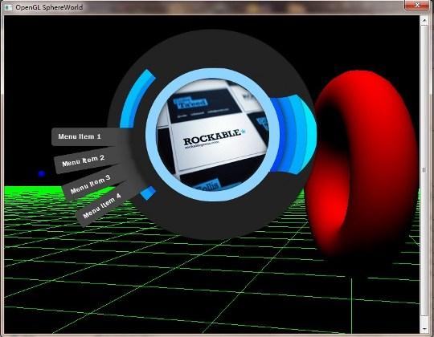

CEF是Chromium Embedded Framework的缩写，是个基于Google Chromium项目的开源Web browser控件，支持Windows, Linux, Max平台。除了提供C/C++接口外，也有其他语言的移植版。
因为基于Chromium，所以CEF支持Webkit & Chrome中实现的HTML5的特性，并且在性能上面，也比较接近Chrome。
CEF还提供的如下特性：自定义插件、自定义协议、自定义JavaScript对象和扩展；可控制的resource loading, navigation, context menus等等。
让我们通过一些实战中的例子，来说明大家都使用CEF做了什么：
早期的双核浏览器(IE + Webkit)，有些使用了CEF来作为Webkit内核浏览器控件。
不过对于浏览器来说，直接在Chrome上面扩展，其实才是王道，大家现在都这么做了（各种极速浏览器）。
Evernote允许用户将网页粘贴到笔记中，还提供了插件用来将网页保存为笔记。
那肯定是需要在Client上面可以正确的渲染页面咯，这个任务就交给了CEF。
GitHub也打包了libcef.dll，从表现上面看，用来展示项目的ReadMe页面的，肯定是CEF，其他地方的UI，可能部分也是用页面来实现的。
QQ很早之前就通过内嵌IE来实现一些功能和界面。从去年开始，QQ引入了CEF，对一些之前用IE的地方进行了替换，这样就可以使用一些基于Webkit的新特性，同时也获得了速度、稳定性、兼容性方面的优势。
Adobe推出了一整套制作现代网页(或者说HTML5?)的工具，取名Edge。
Adobe Edge Animate，做动画用的，可以通过编辑时间线，创建原件(Edge Animate里面叫做symbol)，来实现复杂的动画。
Edge Reflow则是Design the responsive web. 有人翻译为响应式，其实就是自适应了。
上面两款软件，其基本面向的是Webkit内核的浏览器，那么内嵌一个Webkit内核，来提供所见即所得的预览、编辑界面就是必须的了。他们都使用了CEF。（后面会介绍CEF和纯Webkit的差别）
Q+在Web App的概念下，为Web页面提供了一个运行环境(简单来说就是：Client的一个框和一些可用的API)，支持IE和Webkit内核。
对Web开发同学来说，我们引入的Webkit内核（实际上是CEF），无需考虑IE的版本兼容问题，既提高了开发效率，又可以利用一些新的HTML5特性。当时Q+的应用市场、消息中心、壁纸、音乐Widget等应用都是基于Webkit内核开发的。
Q+项目可以说对CEF进行了比较多的尝试，比如：
开发的音乐Widget，就使用了HTML5的audio标签；
一些应用使用了HTML5的离线功能（就是配个manifest文件那个），当然其中也遇到些曲折，收获了不少经验。
打包的Webkit调试工具（Dev Tools）。
自定义协议：比如对qplus://协议的访问，可以重定向到某个特殊文件夹之类的功能。
Off Screen Rendering（OSR，离屏渲染）：通过离屏渲染 + Windows的Layered Window，就制作了不规则的网页窗口（网页不透明区域是什么形状，窗口就是什么形状）
举了那么多例子之后，这个问题说起来就容易多了：
所谓的OSR，就是不创建真窗口，将整个页面渲染到一张位图上面。当然不只是渲染，还有一系列的API来处理鼠标、键盘事件，处理输入法事件等。
这个特性在不能使用真窗口的时候特别有用，比如Layered Window上面，或者是游戏中渲染到Texture上。
利用OSR特性，可以做出一些有趣的效果，比如：
AlloyTeam做出了Webtop，里面用OSR做了纯网页实现的浏览器、播放器等。
有一个Awesomium项目，也是支持OSR，已经有游戏项目用Awesomium来在游戏中渲染网页了。 （看Awesomium的输出文件，应该和CEF的实现方式差不多，都是对Chromium的封装，Awesomium能做的CEF应该也可以做）
我业余时间做了一个demo，用CEF将网页渲染到了OpenGL的Texture上面，也算是将CEF应用在游戏中的一小步尝试，如图：

IE作为内嵌的浏览器控件已经有很久的历史了，准确的说是现在我们有了很多可以替代IE的方案。
CEF vs IE：
IE：内核随着操作系统不同，版本从6到10，Web开发对这些版本的兼容工作量不可小视。
CEF：使用的是Webkit内核，从特性上看，一个CEF版本，可以对应一个Chrome的版本号，这样Web开发就有了明确的特性集合，免去了考虑兼容性的工作量。
IE：当然旧版本的IE也不支持最新的HTML特性和标准。
CEF：毫无疑问，在对新特性的支持上Webkit和Chrome都是走在前沿的。
IE：不开源，限Windows平台
CEF：开源，使用的Webkit, Chromium都是开源的，开源就意味着更多可定制的可能；且跨Windows, Mac, Linux3个平台。
IE：可以通过一些hack的方法来实现离屏渲染，但是工作量不小，而且不是官方支持的。
CEF：有专门的离屏渲染模式和对应的API。
IE：所有Windows用户都有IE，这是IE的优势（不过有些用户的IE设置不正缺，会导致无法使用，比如jscript.dll未注册，导致无法使用JavaScript）
CEF：要自己更安装包打包
为什么要特意将CEF和Webkit做对比呢？
最近看了一篇很好的文章，讲了Webkit到底是什么，不是什么，以及为什么要有那么多的Webkit port： 《开发者需要了解的WebKit》
这里大概总结一下：
Webkit是网页的解析和排布引擎，是所有基于Webkit的浏览器共享的。默认的Webkit port是Safari，就是下载下来Webkit源码编译的版本。 除此之外还有其他的Webkit port，包括Chromium, QtWebkit等，在2D绘图、GPU加速、JavaScript引擎、audio/video解码等，都有不同的实现。
V8引擎，skia的2D渲染，Chromium的GPU加速的实现，等等，借助Chromium的优秀实现，使CEF也成为了一个优秀的Webkit port。
做人要厚道，CEF也有自己的缺点和局限，也不能只提优点，这里我把CEF的缺点、劣势介绍一下：
最新版的CEF，所有DLL体积加起来，应该接近40M了，压缩之后估计也要10M+。 如果你的项目本身安装包体积就不大，并且也无法接收这体积，那CEF不适合你。
当然对于现在按G来计算的游戏的话，这个体积应该还是可以接受的。
普通的Client项目，就看项目本身需要使用CEF实现的特性，是否值得让产品的安装包增大这么多。 当然这里也有一些实现上的妥协，比如做安装后下载（个人认为这个意义不大，毕竟安装包用户还可以选择用下载软件来加速）
Chrome的缓存设计成只能有一个进程读写，CEF自然也是如此。
对于需要多开的Client，目前只能每个进程实例指定一个不同的缓存文件夹。但是这无疑增加了硬盘占用，也使某些本来被缓存的文件被下载了多次（比如A进程缓存了jQuery.js，B进程由于缓存不同目录，还得去请求、缓存一次jQueyr.js）
OSR目前不像真窗口模式那样，可以使用GPU加速，OSR目前还只能使用软件渲染，也就是说一些CSS 3D的效果无法支持。
不过OSR的特性还在不停完善中，个人认为还是值得期待。
写了这么多，算是一个CEF的简介吧，后续要写点儿干货，即如何使用CEF，包括：
CEF代码获取，编译，嵌入，处理页面和Client的API调用，OSR离屏渲染，缓存，自定义协议，CEF1 & CEF3等。
嗯，今天就到这里吧。